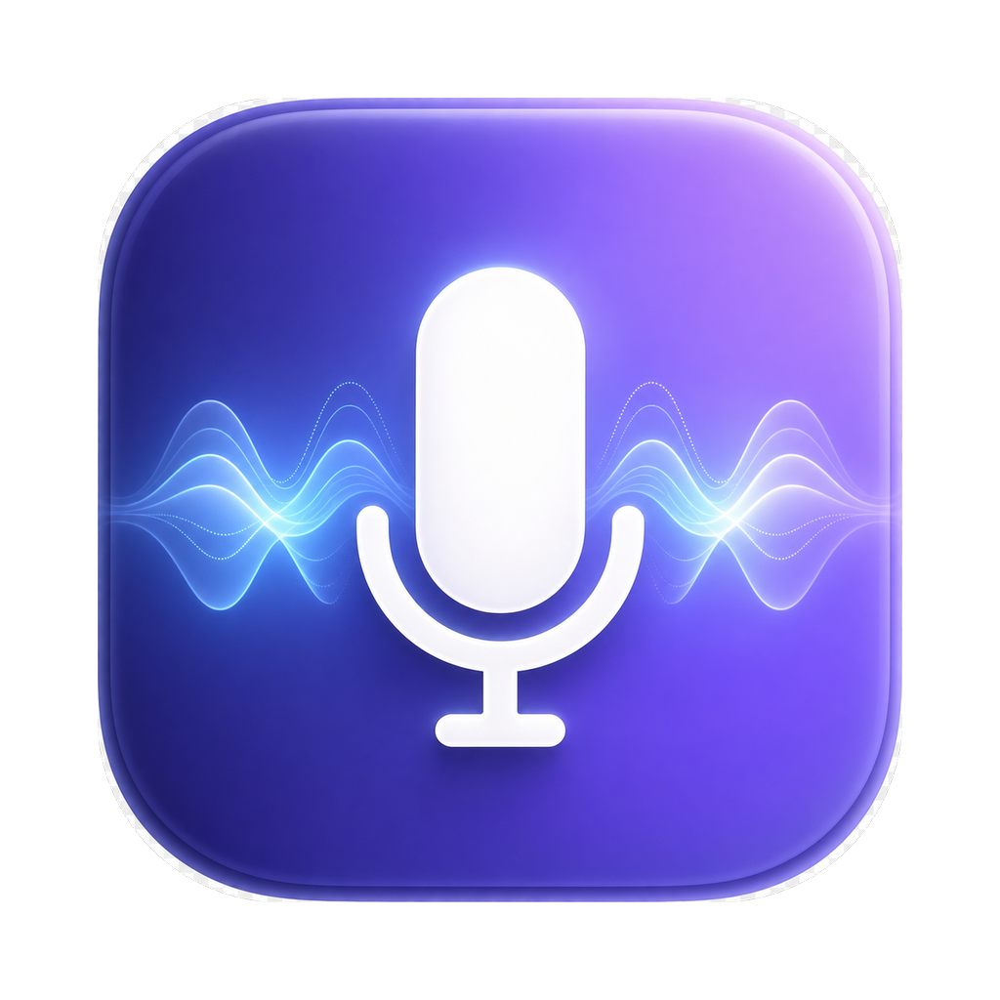

WhisperApp
พูดแล้วให้ Mac พิมพ์ให้ — กด Fn ค้างแล้วพูด ปล่อยปุ๊บข้อความเด้งลงแอปที่ใช้อยู่ทันที ถอดเสียงด้วย Whisper แล้วขัดเกลาคำผิดด้วย AI ให้อัตโนมัติ
ทำไมต้อง WhisperApp
Hold to Talk
กด Fn ค้างเพื่อพูด ปล่อยเพื่อหยุด — เหมือน walkie-talkie หรือสลับเป็นโหมด toggle (เคาะ 2 ครั้งเริ่ม เคาะครั้งเดียวหยุด) เปลี่ยนปุ่มลัดได้ตามใจ
เร็วด้วย Groq
ถอดเสียงด้วย whisper-large-v3-turbo บน Groq — เร็วระดับเสี้ยววินาที และมี free tier ใส่ API key เดียวใช้ได้ทั้งระบบ
AI Correction
ข้อความที่ถอดได้ถูกขัดเกลาด้วย LLM อัตโนมัติ — แก้คำผิด เว้นวรรค จัดประโยคให้อ่านลื่น ทั้งไทยและอังกฤษ
อยู่บน Menu Bar
ไม่มีหน้าต่างรก ไม่กินพื้นที่ Dock — แอปเงียบๆ อยู่บน menu bar พร้อมใช้ทุกเมื่อ ทำงานกับทุกแอปบน Mac
ปลอดภัย & Notarized
Sign ด้วย Developer ID และผ่าน Apple notarization — ดับเบิลคลิกติดตั้งได้เลย ไม่มีคำเตือนความปลอดภัย API key เก็บในเครื่องเท่านั้น
เบาหวิว
เขียนด้วย Swift ล้วน ไฟล์ติดตั้งเพียง ~4MB ไม่มี Electron ไม่มี background process หนักเครื่อง
เริ่มใช้ใน 2 นาที
- ดาวน์โหลด WhisperApp.dmg แล้วลากไปที่ Applications
- เปิดแอป → อนุญาตไมโครโฟน & Accessibility ตามที่ระบบถาม
- ขอ API key ฟรีที่ console.groq.com แล้ววางใน Settings (หรือตั้ง
GROQ_API_KEYใน~/.zshrc) - กด Fn ค้าง แล้วเริ่มพูดได้เลย 🎉